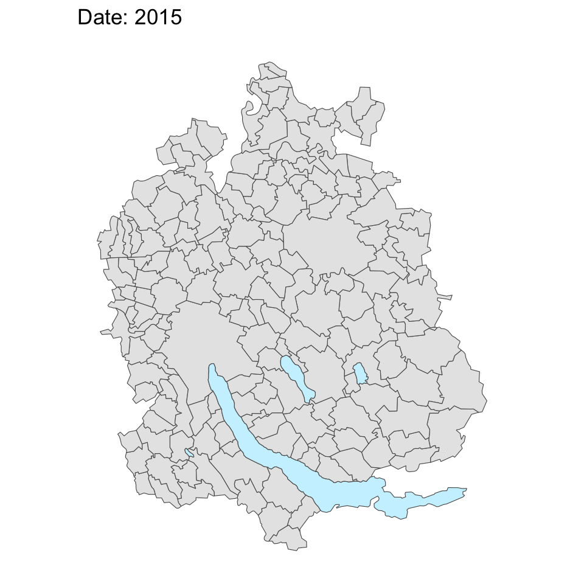
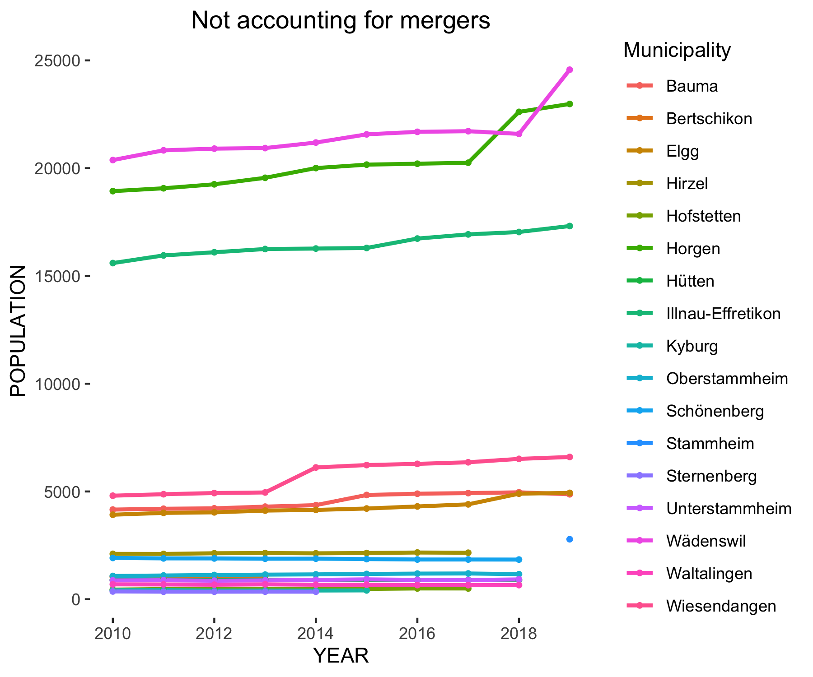
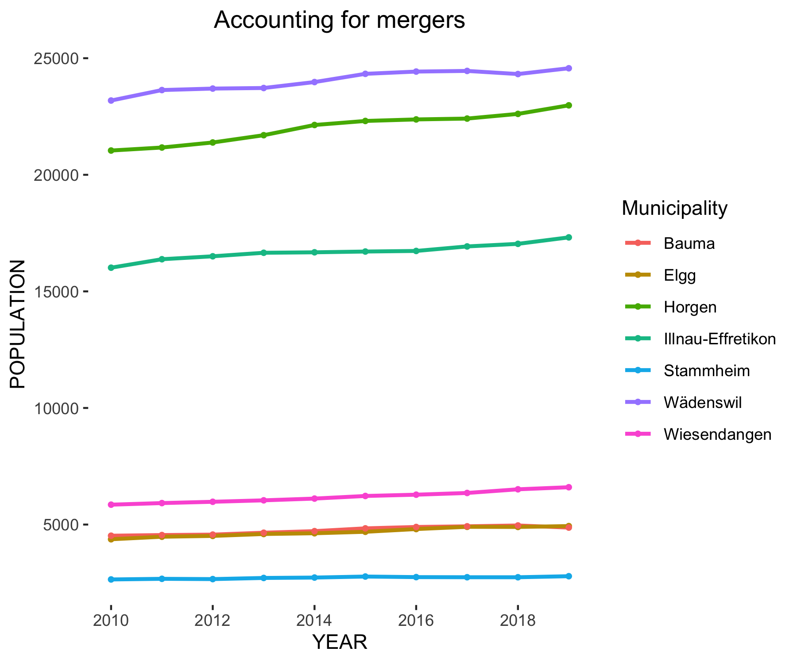

SwissCommunes:
A package to help navigating the Swiss municipality-mergers
Thomas Knecht 1
Kirill Müller 1
Tobias Schieferdecker 1
1 cynkra GmbH, Zürich, Switzerland
Background
Starting in the mid-nineties, there has been an ever increasing trend towards higher numbers of municipality mergers in Switzerland.
Up to now, 1023 municipalities “disappeared” from the municipality cadaster.
They where either integrated into existing municipalities or a new municipality was created from two or more.

Especially for statistical offices, these mergers pose problems for the creation of time series, e.g.:
- values associated with municipalities often jump at the times of mergers
- if the number identifying a municipality changes because of a merger, it can be impossible to track it into the past
Motivation
Of course this problem is not new and we have seen many different solutions for it, but none that were implemented in R.
The Federal Statistical Office (FSO) publishes a table containing all mutations concerning the municipalities (renaming, area redistribution, mergers, etc.).
It is a very informative table, but not easy to use.
Our goal in this package is to transform the FSO table in a way that makes it more user-friendly.
The Package
SwissCommunes provides functions that help taking municipality mergers into account.
The main goal is to generate a mapping table of the municipality mergers for the requested period of time.
This table allows to map municipalities to the target municipality, that used to be separate from it in the past, but merged with it before the target year.
This happens for each year of the desired time series.
Further functionality we want to implement:
- Provide the municipality mergers of a certain year
- generate a mapping table between two municipality states of unknown years
- Provide area as well as population data for each municipality as far back as possible in order to allow support for weighted time series
Unfortunately, the package is in full development and the version shown here is therefore currently not accessible on a public github account.
It will be available on github (FIXME: is this the right link?) in the near future though (and in the slightly more distant future most likely also on CRAN).
Difficulties
There are cases of mutations that require special attention, and sometimes treatment on an individual basis:
- area redistributions between municipalities
- mutations that take place during the year
- …
Create your merger lookup table and join it to your time series!


zh_merger_tbl <-
get_merger_mapping_table(
START_YEAR = 2010,
END_YEAR = 2020,
CANTON = ‘ZH’
)
zuerich_merged <- join_mergers(
df = zuerich,
mapping_table = zh_mergers,
x_join_year = ‘JAHR’,
x_join_bfs = ‘BFS’,
x_gem_name = ‘GEMEINDE’) %>%
group_by(
JAHR,
BFS_neu,
Gemeinde_neu
) %>%
summarize(pop = sum(pop))
.png)